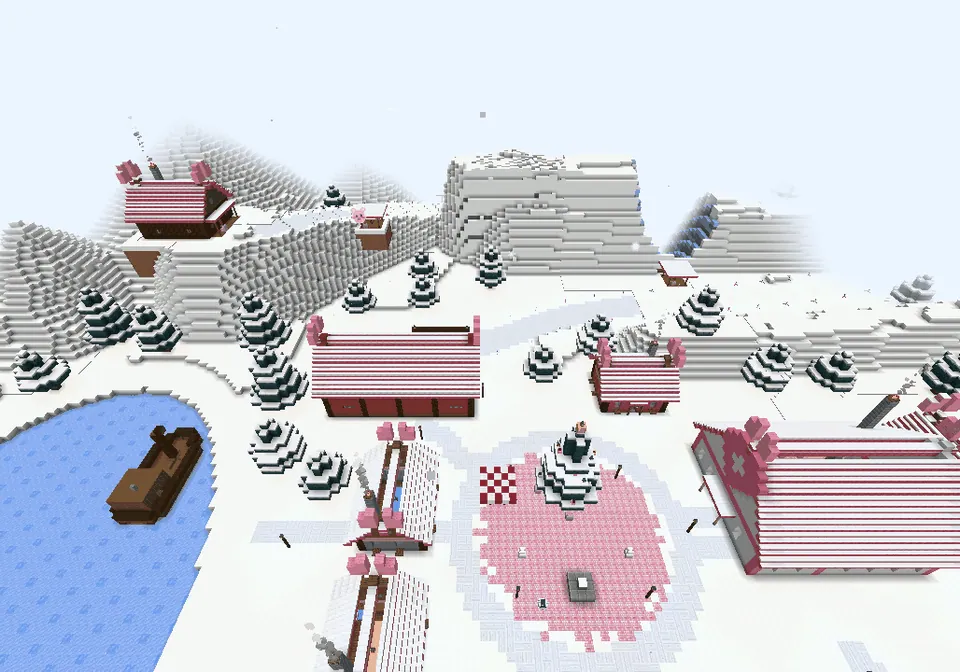
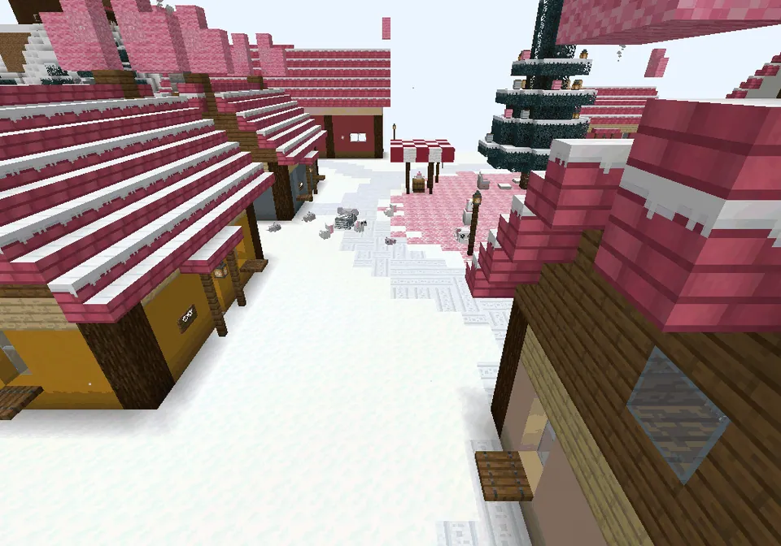
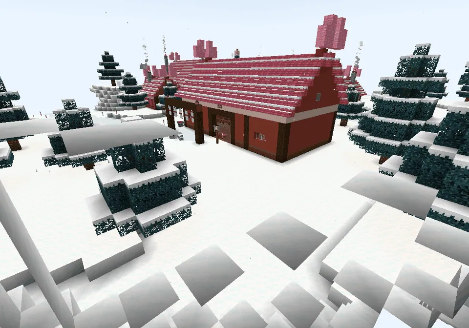
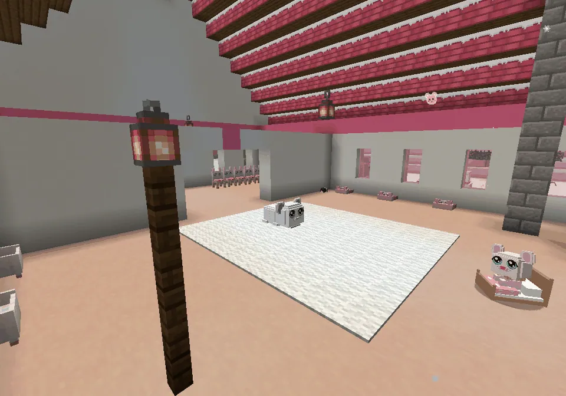
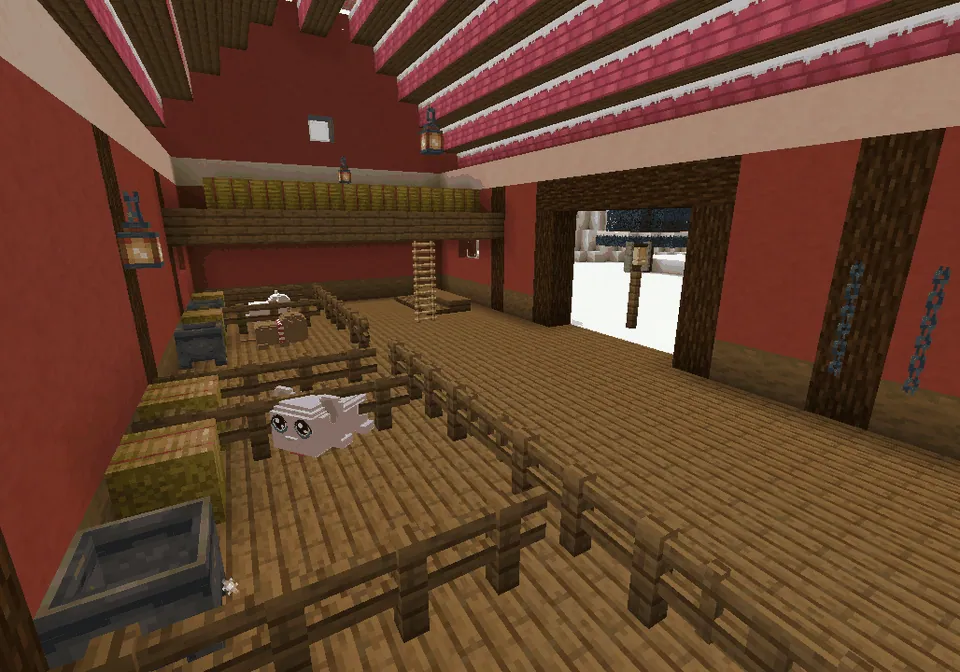
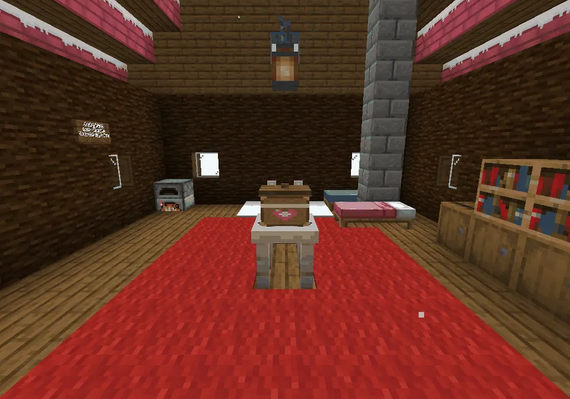
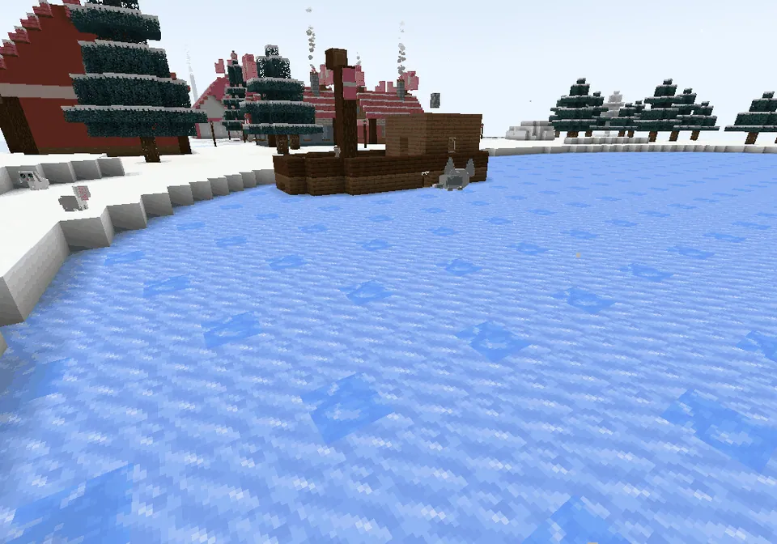

Het besneeuwde guhstadje midden in de Sneeuwguhtoendra: Baltoguh, Boris, Rosy en de tocht door de storm
Nomguh
In the middle of every tundra lies Nomguh, a snowy guh town (a wink at Nome): a round square with a big decorated sneeuwguhspar, a hot chocolate kiosk and an empty statue pedestal (Hier komt een held te staan...), eight pastel log cottages with snowy roofs and pink guh ears, the ziekenhuisje with tucked-in babies (three of them sneeze: hatsjoe-njeg!), the red sled-dog stable with the start line, Muk & Luk's igloo by the ice pond, and the old boat frozen in the bay where Baltoguh and Boris live. Around it the town has its own landscape: the Nomguh peaks with the berghut on top, the Stormdal, the Kloof, the Lawineberg and the frozen bay. The whole town is protected.
Midden in elke toendra ligt Nomguh, een besneeuwd guhstadje (een knipoog naar Nome): een rond plein met een grote versierde sneeuwguhspar, een warme-chocoladekiosk en een lege sokkel (Hier komt een held te staan...), acht pastel blokhutten met sneeuwdaken en roze guhoortjes, het ziekenhuisje met ingestopte baby's (drie ervan niezen: hatsjoe-njeg!), de rode sledehondenstal met de startlijn, de iglo van Muk & Luk bij het ijsvijvertje, en de oude boot vastgevroren in de baai, waar Baltoguh en Boris wonen. Om het stadje ligt een eigen landschap: de Nomguh-pieken met de berghut bovenop, het Stormdal, de Kloof, de Lawineberg en de bevroren baai. Het hele stadje is beschermd.
Baltoguh en Nomguh

Nomguh from aboveNomguh van bovenaf
The square, the cottages and the frozen bay with the boat.Het plein, de huisjes en de bevroren baai met de boot.

The squareHet plein
Snowy roofs with pink guh ears.Sneeuwdaken met roze guhoortjes.

The sled-dog stableDe sledehondenstal
The start line of every ride.De startlijn van elke tocht.

The ziekenhuisjeHet ziekenhuisje
Rosy and the sick babies.Rosy en de zieke baby's.

In the stableIn de stal
Stalls, harnesses and a hay loft.Boxen, tuigjes en een hooizolder.

The berghutDe berghut
The medicijnkist on the table, far up on the Hutkop.De medicijnkist op tafel, hoog op de Hutkop.
At a glanceIn het kort
- AdvancementsVooruitgangen
- Brrr, Nomguh! · Een buitenbeentje · Hatsjoe-njeg! · Da, kleine guh... gak! · Muk en Luk · Hup, Baltoguh! · De medicijnkist · De witte wolf-guh · Op tijd! · Maar heel misschien... een Baltoguh wel ★ · Een eigen Baltoguh · Snuf snuf, naar huis! · Zo snel als de wind · Een held op een sokkel · Warm ingepakt in Nomguh
PicturesPlaatjes

See alsoZie ook
 The Nomguh sled sprintDe Nomguh-sledesprintMinigames
The Nomguh sled sprintDe Nomguh-sledesprintMinigames Baltoguh and NomguhBaltoguh en NomguhStoriesVerhalen
Baltoguh and NomguhBaltoguh en NomguhStoriesVerhalen Through the snowstormDoor de sneeuwstormStoriesVerhalen
Through the snowstormDoor de sneeuwstormStoriesVerhalen